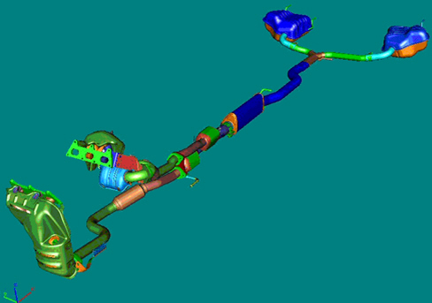

INTRODUCTION - EXHAUST PIPES AND SILENCERS
- Path
- Descriptions > 10 ENGINE > 1076 EXHAUST PIPES AND SILENCERS > INTRODUCTION - EXHAUST PIPES AND SILENCERS
- Kind
- system description
- Applies to
- engines: 3.2 JTS; all production periods
- Interactive page
- https://sloeber94.github.io/elrnDB-aBrrSpdr/en/#/946001192
Applies to: engines: 3.2 JTS; all production periods
Exhaust system
The exhaust system is split in the initial section where the exhaust manifolds for the two banks, the right rear and the left front reach the two pre-catalyzers. The two pipes then leave the pre-catalyzers and are connected to the pipes that direct the exhaust gases to the left and right catalyzers by means of flexible connections. At the outlet of the catalyzers the two pipes become one which directs the exhaust gases into the front silencer and comes out as a single pipe which splits later on into two pipes again which reach the two rear silencers separately.
